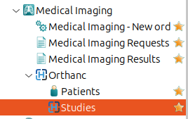
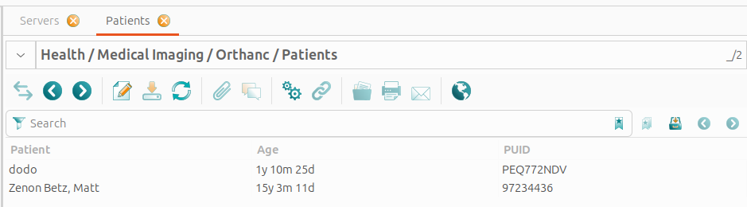
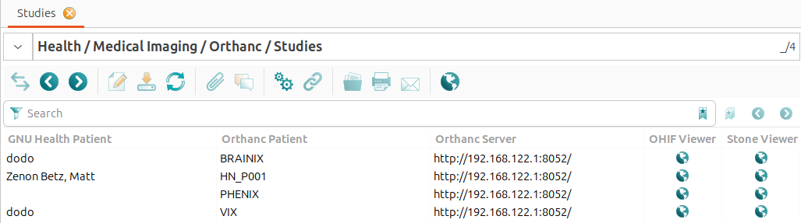
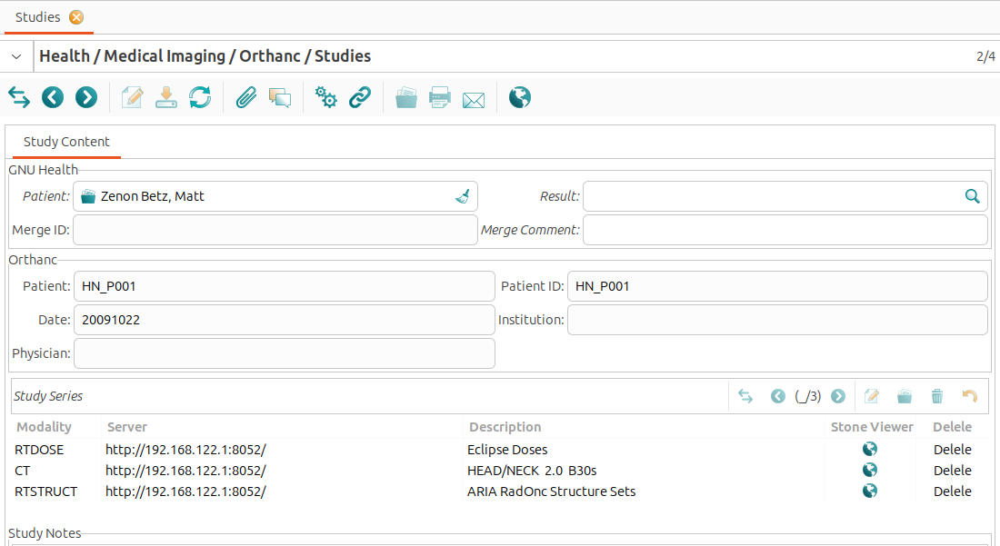
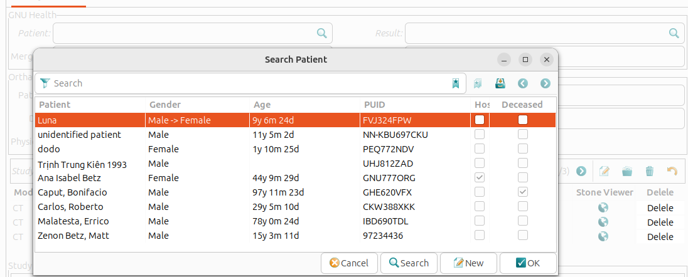
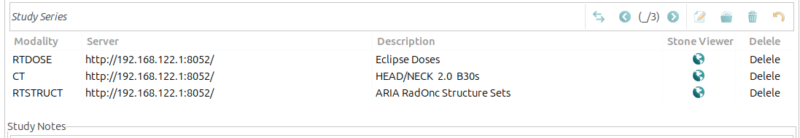
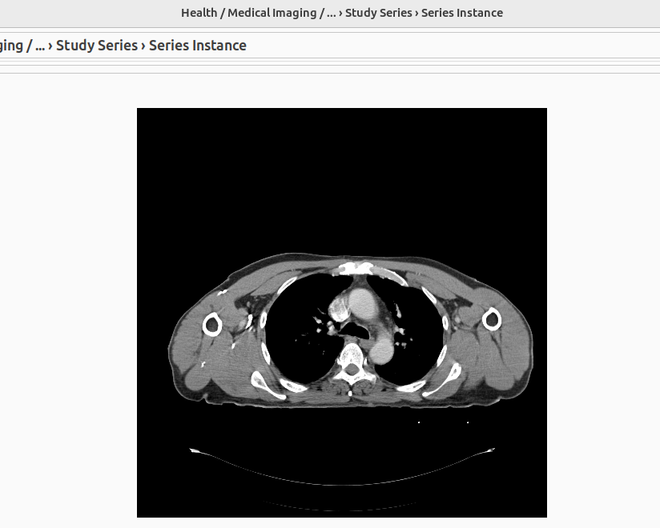
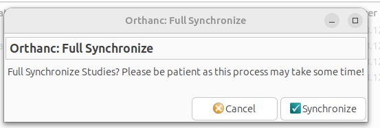
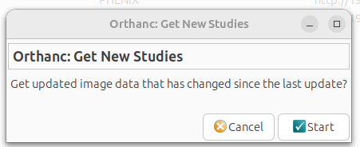
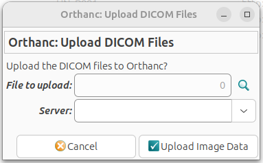

Imaging
Default imaging module
The default GNU Health imaging module (health_imaging) provides basic imaging support and workflow. Only basic, non-DICOM images are supported. No DICOM viewer is provided.
Creating a request
Create draft request
Wizard under Imaging → Dx Imaging - New’’
Fill in:
Patient
Urgent or not
Specific test(s)
Requesting doctor
Click Request
- Generate order
Find draft requests under Imaging → Dx Imaging - New → Draft
Click Request button on the draft request in the detailed view
Request will now be under the Requested tab
Generating results
Click Generate Results button on the form (under Dx Imaging Requests)
Fill in data (available under the Dx Imaging - Results menu item)
Add images under the Images tab
Add comments under the Comment tab
View results
Results are found under the Imaging → Dx Imaging - Results menu item.
Configuring available tests
Available tests can be configured under the Configuration → Dx Imaging menu item.
There are two sub-sections:
Dx Imaging Test Types (MRI, Ultrasound, etc)
Dx Imaging Tests (available tests)
Imaging worklist module
Setup worklist template
Open: Health > Configuration > Medical Imaging > Worklist template
Set template type.
If set template type to dump2dcm, worklist text will be handle by dump2dcm command of dcmtk package in the future, if set to json, worklist text will be handle as json by python-orthanc-tools in the future.
Set charset field.
This field is used to store SpecificCharacterSet tag (0008,0005) of worklist, for example: ISO_IR 100, ISO_IR 192, GBK …
See SpecificCharacterSet variable of worklist template.
Create worklist templates.
In most situation, a type of modality should to create a template, template use python genshi new text syntax and used to generate dump2dcm dumpfile-in text file or json format string depend on template type.
https://genshi.readthedocs.io/en/latest/text-templates/
At the moment, template support the following variables and most of them use dicom tag nicknames.
AccessionNumber
RequestedProcedureID
StudyInstanceUID
PatientName
PatientID
PatientAge
PatientBirthDate
PatientSex
RequestingPhysician
RequestingService
ReferringPhysicianName
InstitutionName
RequestedProcedureDescription
ScheduledProcedureStepStartDate
ScheduledProcedureStepStartTime
ScheduledProcedureStepID
TimezoneOffsetFromUTC
ScheduledStationAETitle
Modality
Two special variables are supported:
my: this variable refer to ‘gnuhealth.imaging.test.request’ model.
MergeID: Merge Id is used to merge orthanc studies to health imaging result, in most situation, we do not use this variable for we use StudyInstanceUID as merge id, if modality workstation has bug and can not handle StudyInstanceUID properly, user can use other dicom tags to tranfer merge id, more details can be found in get_merge_id method in gnuhealth.imaging_orthanc.study model. but, this is a hack way, do not use unless absolutely necessary.
if user would like to support new worklist template variables, extend get_worklist_template_data method in gnuhealth.imaging.test.request model is a good way.
Note: Creating a template for a modality may need more work, user should know which tags should be set up properly with the help of Dicom Conformance Statement of this modality, user can use wlmscpfs of dcmtk to create a test worklist server to know which tags will be sent to worklist server from modality. user can try:
his-utils/scripts/imaging/worklists_service_demo.sh
Setup fields of Medical Imaging Studies.
(Health > Configuration > Medical Imaging > Medical Imaging Studies)
Type: the code of this field is used as Modality (0008,0060) tag of worklist, so make sure its code use the value of Dicom Modality (0008,0060) tag, more details can be found at:
AETitle: this field is used as ScheduledStationAETitle (0040,0001) tag of worklist.
Worklist Template.
View worklist text of a imaging request
Open form: Medical Imaging > Medical Imaging Requests
Click worklist field of a request
Generate worklists wl files
Let orthanc enable worklists plugin, please read:
https://book.orthanc-server.com/plugins/worklists-plugin.html
Install pydicom python package in orthanc machine.
Install dcmtk package in orthanc machine if dump2dcm template type is used.
Install python-orthanc-tools python package in orthanc machine if json template type is used.
Run the below command in orthanc machine, it will get worklist text from gnuhealth and generate a wl file (dicom file used by orthanc worklist server), -w argument should set to the Database config of worklists plugin.
$ python3 his-utils/scripts/imaging/update_worklists_database.py -d <gnuhealth-db> -u <gnuhealth-user> -P <password> -w <orthanc-worklist-db-dir>
More arguments can be found by run:
$ python3 his-utils/scripts/imaging/update_worklists_database.py -h
Orthanc Integration
Introduction
This module (health_orthanc) provides a light integration between Orthanc DICOM servers and GNU Health. The module uses the REST API provided by Orthanc to synchronize patient and study information in GNU Health. Put simply, the code asks the Orthanc REST API what studies it has and then saves that information locally in GNU Health. No image data is stored in GNU Health.
Main Features
The health_orthanc module enables you to manage and visualise DICOM studies stored on Orthanc servers. It supports the synchronisation
of patient and study data, the structured viewing of studies, and the linking of Orthanc studies with GNU Health patients.
These features can be accessed via Health → Medical Imaging → Orthanc.


Orthanc::Patients


This view shows all GNU Health patients that are linked to studies on the Orthanc servers.
Orthanc::Studies


The view under Health → Medical Imaging → Orthanc → Studies shows all studies stored on the Orthanc servers. This requires that the Orthanc servers are properly configured and connected to GNU Health. The following information is displayed for each study: - GNU Health Patient: The GNU Health patient who is linked to the study. This field is empty if the study ishas not yet been linked to a GNU Health patient. - Orthanc Patient: The patient name as stored in the Orthanc server. - Orthanc Server: The Orthanc server where the study is stored. - OHIF Viewer: A link to the OHIF DICOM viewer for the study. - Stone Viewer: A link to the Stone DICOM viewer for the study.
Double-clicking on a study opens the ‘Study Content’ view, displaying information about the study. This view consists of three sections: The “GNU Health” section shows information about the GNU Health patient linked to the study, the “Orthanc” section displays information about the study retrived from Orthanc, and the “Study Series” section provides details about the series belonging to the study.


The GNU Health Patient field is editable. Clicking on the search icon next to the ‘GNU Health Patient’ field opens the list of patients registered in GNU Health. This makes it easy to link the relevant GNU Health patient record to the Orthanc study.


- The ‘Orthanc’ section shows the information:
Patient: The patient’s name as stored in Orthanc server.
Patient ID: The unique identifier assigned to the patient by the Orthanc server.
Date: The date when the study was conducted.
Institution: The healthcare institution where the study took place.
Physician: The name of the physician who requested the study.
- The study’s DICOM series are displayed in tabular format. The following details are provided for each series:
Modality: ispecifies the imaging modality used in the series (e.g. CT or MRI).
Server: indicates the Orthanc server hosting the series.
Description: provides a brief summary or description of the series.
Stone Viewer: opens the series in the Stone DICOM viewer.
Delete: allows to delete the series from the Orthanc server. This action is irreversible and should be used with caution.


Double-clicking on a series opens the series detail View, which displays information about the selected series, including its associated instances (DICOM images). The view includes the following fields: - Description: A brief summary of the series content. - Modality: The imaging modality used (e.g. CT or MRI). - Viewers: Direct links to view the series in the Stone DICOM viewer.

- The list of instances is presented in table format, containing the following columns:
Instance Number: displays the sequence number of the DICOM image within the series.
Image position: indicates the spatial location of the image within the series.
SOP Instance UID: is the unique identifier assigned to each DICOM image.
Add to RPT: allows users to add the selected instance to a report within GNU Health.
Double-clicking on an instance in the table opens the image preview in PNG format.


Tools: Full Synchronization
Full synchronisation retrieves all DICOM studies from the selected Orthanc server. Provided that the Orthanc server is properly configured and connected, this process ensures that every imaging study is imported into GNU Health.


Tools: Newly Synchronization
The new synchronisation mechanism only retrieves studies that exist in Orthanc but are not yet present in GNU Health. This makes it especially useful for keeping your GNU Health database up to date with the latest studies from Orthanc, thereby reducing upload time.


Tools: uploaded DICOM files
The health_orthanc module enables DICOM files to be uploaded directly to Orthanc servers from GNU Health. This integration is useful for managing medical imaging data within the GNU Health ecosystem.


The health_orthanc module has been greatly improved in GNU Health 5.0, but its models are not compatible with old version, so users need to migrate data like below:
Full synchronize data from orthanc server by click ‘Orthanc: Full synchronize’ menu in studies forum of health_orthanc module.
Run migrate_orthanc_module.py to migrate map data created by user hand, this script will mark study merge comment field to “NEED TO VERIFY!”, which will help user verify them in the future.
orthanc study -> gnuhealth test result
orthanc patient -> gnuhealth patient
$ python3 his-utils/scripts/upgrade_utils/5.0/migrate_orthanc_module.py -h
Usage
A new dropdown menu titled Orthanc is available under Health → Imaging.
The menu has 2 sub-sections:
Patients
Studies
These sub-sections provide the list of studies and patients on the known Orthanc servers. You can filter and search normally. The views are generally read-only. On the list of Orthanc patients, however, some patients will be linked to local patients if the remote and local MRN/PUID match. Otherwise, Orthanc patients can be manually linked to a local patient by updating their patient field.
Note
When an imaging request is completed, the result can be directly linked to Orthanc studies through the new Studies tab under the Imaging → Dx Imaging - Results entry.
Sync orthanc studies to gnuhealth imaging results.
Just run:
$ python3 his-utils/scripts/imaging/sync_orthanc_server.py
Administration
Server configuration
A new dropdown menu titled Orthanc is available under Health → Configuration → Medical Imaging
The menu has 2 sub-sections:
Add Orthanc Server
Servers
To add a new remote server click Add Orthanc Server. This will open a wizard that guides the user through adding a server:
Fill in the label (must be unique), full domain, username, and password.
Click Begin
After a short time, a success message should appear.
In case of invalid domains or credentials, there will be an error page instead of a success page.
The Servers page lists the current servers. Clicking on a specific server will show its credentials, validated status, and other important information. Of note, updating the domain, username, or password will trigger a background, remote check to validate the newly updated information.
Synchronization
The module provides a trytond-cron job which by default synchronizes all validated servers every 15 minutes. This can be changed through the Scheduled Actions configuration under Administration → Scheduler.
Servers can by manually synchronized by clicking the Sync button on their individual view.
Troubleshooting
Server(s) not automatically synchronizing
Make sure trytond-cron is running.